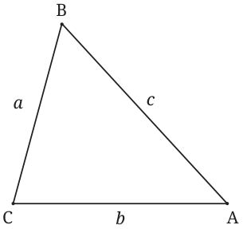
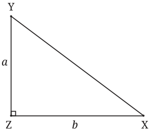

Consider the following statement:
Statement 1: If two sides of a triangle are equal, then the angles opposite the equal sides are equal.
Such a statement that is either true or false is called a proposition.
Now consider the following proposition:
Statement 2: If two angles of a triangle are equal, then the sides opposite the equal angles have equal lengths.
The first proposition is of the form ‘if X then Y’. The second is of the form ‘if Y then X’. We say that the second proposition is the converse of the first proposition.
The statement ‘if X then Y’ is also written as ‘X implies Y’. We will use both formulations interchangeably.
If a proposition is true, then is its converse always true?
Think and Reflect
We have proved the first statement in an earlier grade. Is the second statement true? Can you prove it?
(Hint: Draw the altitude from the vertex containing the third angle.)
Let us consider some examples of propositions and their converses,
Example 1:
- Proposition P: If it rains, then the road is wet.
- Converse Q: If the road is wet, then it has rained.
Proposition P is true but its converse, Q, may not be true. For instance, the road may be wet because a tanker spilled water on the road!
A situation that illustrates why a given proposition is not necessarily true is called a counterexample. It refers to an example that contradicts the stated proposition.
Finding a suitable counterexample is an important ingredient of mathematics because it allows us to show in a short and convincing way that a proposition is false.
Here is a famous example. Fermat claimed that all numbers of the form \(2^{2^{n}} + 1\) are prime (\(n = 0, 1, 2, 3, \ldots\)); e.g., the number \(2^{2^{3}} + 1 = 257\). But Euler disproved this by showing that the number \(2^{2^{5}} + 1\) is composite.
Example 2:
- Proposition P: If a number is a multiple of 6, then it is a multiple of 3.
- Converse Q: If a number is a multiple of 3, then it is a multiple of 6.
Proposition P is true. Justify why this is so.
Does this now mean that all multiples of 3 are also multiples of 6? This corresponds to the converse statement Q. Determine if it is true and if not, give a counterexample.
Example 3: In this example, \(n\) is any positive integer.
- Proposition P: If \(n\) is a perfect square, then it has an odd number of factors.
- Converse Q: If \(n\) has an odd number of factors, then it is a perfect square.
You may recall that we came across these statements in the previous grade. Which of them are true?
Discussion
Consider the following argument.
Each factor of a number has a ‘partner’ factor such that their product yields the given number, e.g., 5 is a factor of 35, and \(5 \times 7 = 35\). Here, 7 is the partner factor of 5, and vice-versa. Let us focus on factor-partner pairs of numbers, e.g., (1, 12), (2, 6), (3, 4) are the pairs for the number 12.
If a number has an odd number of factors, there must be a factor-partner pair in which the same number repeats (e.g., the partner factor of 5 in 25). If not, the given number will have an even number of factors since each factor can be paired with its factor pair.
Thus, if a number has an odd number of factors, then it is a perfect square.
What does this argument prove? Statement P or Q?
To clearly understand this, let us reframe the argument as follows —
- \(n\) has an odd number of factors
which implies
- the existence of a factor-partner pair in which the same number repeats, say \((f, f)\)
which implies
- \(n\) is a square number: \(n = f \times f\)
This only proves Q. It doesn’t prove that every square number has an odd number of factors (Proposition P).
Is P true?
It is. The argument above can be modified to prove this.
We start with (iii). Clearly, (iii) implies (ii). Does (ii) imply (i)? Not necessarily because (ii) does not state the number of pairs with repeating factors. For example, if the number of such pairs is two — say \((f, f)\) and \((g, g)\) — what can we say about the number of factors? In such a case, the given number will have an even number of factors.
However, a number cannot have more than one factor pair with repeating factors. Thus, a square number necessarily has an odd number of factors. Hence Statement P is also true.
In this example, ‘\(n\) is a perfect square’ and ‘\(n\) has an odd number of factors’ imply each other.
Example 4:
- Proposition P: If two triangles have the same area, then they are congruent.
- Converse Q: If two triangles are congruent, then they have the same area.
Determine if these statements are true or not. Justify the true statements and give a counterexample for each false statement.
These examples show that a proposition can be true but not its converse. Or it can happen that both the proposition and its converse are true.
Think and Reflect
It can also happen that both the proposition and converse are false! Can you give an example?
Example 5: Here is a statement of the Baudhāyana–Pythagoras theorem.
Let \(a, b, c\) be the sidelengths of a triangle. If the triangle is right-angled, then \(a^{2} + b^{2} = c^{2}\).
What is its converse?
To write the converse, we keep the first sentence of the Baudhāyana–Pythagoras theorem as it is, and make the necessary change in the second.
Let \(a, b, c\) be the sidelengths of a triangle. If \(a^{2} + b^{2} = c^{2}\), then the triangle is right-angled.
Is this converse true?
Let \(\triangle ABC\) be the triangle with sidelengths \(a, b, c\) such that \(a^{2} + b^{2} = c^{2}\).

Construct another right triangle \(\triangle XYZ\) whose perpendicular sides YZ and XZ have sidelengths \(a\) and \(b\).

What can we say about the length of XY?
(Hint: Use the Baudhāyana–Pythagoras Theorem.)
What can we say about \(\triangle ABC\) and \(\triangle XYZ\)?
(Hint: Use the SSS criterian for congruence.)
We conclude that \(\triangle ABC\) had to be a right triangle after all.
Hence the converse of the Baudhāyana–Pythagoras Theorem is also true!
A Note
We have seen that ‘If X then Y’ can also be written as ‘X implies Y’. These are not the only ways to express this meaning. It can be conveyed through other words and sentence structures as well. For example, ‘Y when X’ also gives the same meaning. The following two statements, for instance, have the same meaning.
Proposition: If a number is a perfect square, then it has an odd number of factors.
Proposition: A number has an odd number of factors when it is a perfect square.
Think and Reflect
- Identify real-life examples in which a proposition is true but not the converse. Give nice counterexamples!
- Give more examples from geometry as well as number theory in which a proposition is true but not its converse. Give appropriate counterexamples.